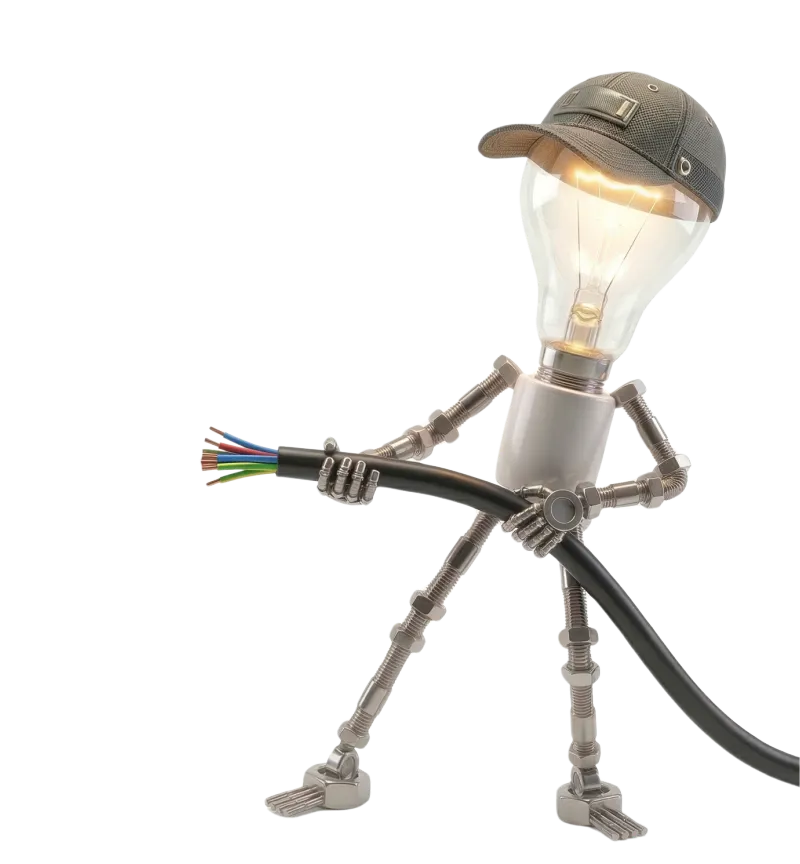
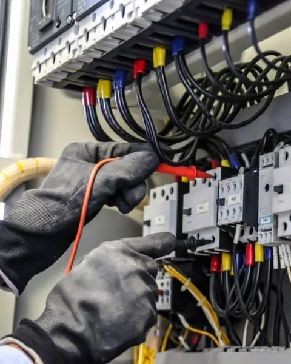

Sainte-Lucie de Porto-Vecchio et environs
Installation, rénovation, dépannage. La garantie d'un artisan de confiance et de proximité, fort de 20 ans d'expérience dans le métier.
Ce que nous faisons
Conception et mise en place de systèmes complets pour constructions neuves et rénovations. Tableaux électriques, câblage, prises et éclairage conformes à la norme NF C 15-100.
Modernisation des installations obsolètes et mise aux normes de votre tableau électrique. Diagnostic complet et obtention du certificat Consuel.
Intervention rapide sur pannes, courts-circuits et dysfonctionnements électriques.
Solutions LED intérieures et extérieures pour jardins, terrasses et allées.
Alarmes, interphones audio/vidéo, caméras de surveillance et détecteurs.
Installation de bornes pour véhicules électriques, conformes aux normes en vigueur. Devis gratuit pour particuliers et professionnels à Porto-Vecchio et alentours.
Portails battants ou coulissants, commande à distance par télécommande ou application.
Qui sommes-nous
Entreprise artisanale basée à Sainte Lucie de Porto Vecchio, Carincielec met ses 20 ans d'expérience dans le métier au service des particuliers et professionnels de Corse du Sud. De l'installation neuve au dépannage d'urgence, nous plaçons la qualité et la sécurité au centre de chaque intervention.

Électricien local
Faire appel à un artisan électricien implanté à Sainte-Lucie de Porto-Vecchio, c'est la garantie d'un interlocuteur unique qui connaît les spécificités du terrain corse : habitat ancien en pierre, constructions neuves en bord de mer, environnement salin exigeant des matériaux adaptés. Franck Carinci intervient depuis plus de 20 ans auprès des particuliers, hôtels, restaurants et commerces de Porto-Vecchio, Bonifacio, Zonza, Sartène et Propriano.
Chaque intervention respecte la norme NF C 15-100 et s'accompagne d'un devis gratuit détaillé. En cas d'urgence, le dépannage est assuré 24h/24 et 7j/7 sur l'ensemble de la Corse du Sud. Notre proximité géographique garantit des délais d'intervention courts et un suivi personnalisé de votre chantier, de la première visite jusqu'à la réception des travaux.
Avis clients
★★★★★« Intervention rapide et travail soigné. Mr Carinci est un électricien très compétent, consciencieux, disponible, ponctuel mais aussi très sympathique, je recommande vivement. »
— Caty Thomas
★★★★★« Excellent travail de la part de Franck, réactivité et professionnalisme dans la bonne humeur. Nous recommandons. »
— Hôtel Résidence Olmuccio
★★★★★« Résolution rapide d'une panne complexe. Nous recommandons vivement ! »
— Dominique Brunat
Contact